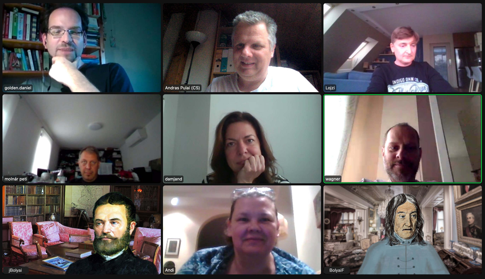
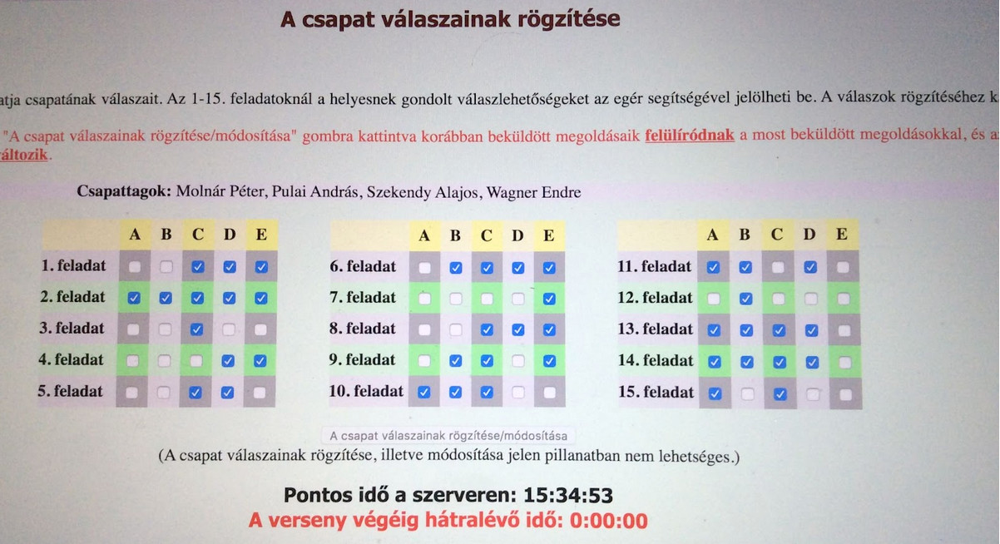

Kevesen tudják, hogy létezik egy matematika csapatverseny, amelyet Bolyai Jánosról neveztek el. Még kevesebben, hogy ennek van egy felnőttek számára meghirdetett kategóriája. A mai napig pedig csak egészen kevesen, hogy a legjobbak között szereplő csapatok közül kettőben is egykori osztályunk komoly érdekeltségekkel bír. Pulai András szervező munkájának köszönhetően sikerült egy zoomba terelni az érintetteket. A beszélgetés résztvevői Damján Dóra, Molnár Péter, Pulai András, Szekendy Alajos, Vecsey-Körmendi Andrea, Wagner Endre és a szerkesztett változat szerzője, Golden Dániel voltak.
P&T Az egyik csapat neve Oldjuk+. Hogyan született ez, kinek a humorérzékét dicséri?
PA Ez nagyon prózai. Valamit be kellett írni a nevezésbe, mert az Endre akkora menedzser volt már akkor is, hogy ezt a feladatot simán kiosztotta. Úgyhogy az elsőre én neveztem, és akkor ennyi, hogy akkor én…
MP Szóval van benne egy vicc. Nem adja könnyen magát, de van benne.
P&T Ez mikor volt?
PA 2019-et tartanám valószínűnek, mert az volt az én emlékeim szerint, hogy az Andi felállt, amikor az osztálytalálkozó volt, és elmesélte, hogy nekik van egy Bolyai-csapatuk, és egyébként ezt ők szokták játszani. Ezt az egészet az Andi indította el, már azt, hogy megszülessen ez a másik csapat.
MP Szerintem ez már akkor egyből volt 2017-ben, amikor volt az osztálytalálkozó így nyáron, és októberben mi már indultunk is.
PA Ez stimmel, igazad lesz, mert ötévente van, és én azt hittem, hogy négyévente…
SZA Megkerestem az első e-mailem, amiben a „Bolyai” szó szerepel, az 2017.10.04, és itt már pontszámítások meg ilyenek voltak.
P&T Ezen a ponton rá kell kérdeznünk arra a híresztelésre, amely szerint Andi csapata olyan volna, mint Columbo felesége: mindig szó van róla, de még soha senki nem látta. Most is eltelt húsz perc ebből a hívásból, és Andi még mindig nem tárcsázott be…
DD Kaláka a neve, ott van az eredményekben. És azt üzente, hogy már a neten van…
P&T Valahol a „neten”…??? Tehát abból a csapatból csak őt ismerjük?
DD Nem, engem is.
P&T De az előzetes beszélgetésből az derült ki, hogy te is a fiúkhoz csatlakoztál eredetileg.
DD Először ebben voltam, aztán meg abban. Kipróbáltam mind a kettőt.
P&T És mennyi volt az átigazolási pénz?
DD Egy mosoly volt, egy mosoly! Igazából kiraktak abból a fiúcsapatból. Kaptam három feladatot, amiből kettőt nem lehetett megoldani, mert nem volt megoldása, egyet meg találgatni kellett. Ilyen feladatokat kaptam a fiúktól, így osztották rám.
SZA Lehet, hogy én háttal ültem a moziban, de ilyenre nem emlékszem. Mindig volt megoldás, persze gyakran nem tudtuk megoldani.
P&T Ideje tisztáznunk, ténylegesen hogyan zajlik maga a verseny?

SZA Aki befizette a nevezési díjat, az belép az oldalra, és amikor idő van, le tudja tölteni pdf-ben a feladatsort. Először úgy csináltuk még, hogy személyesen találkoztunk Endréék irodájában, és akkor ő gyorsan kinyomtatta. Azt hiszem, tizenöt feladat volt, és akkor úgy kezdtük szétosztani…
PA … bátorság szerint…
MP … az első embernek az 1-5-9-13, a másodiknak a 2-6-10-14 stb.
P&T Úgy van, hogy az elején a könnyebbek, a végén a nehezebbek?
SZA Nem feltétlenül. Fontos tudni, hogy semmi olyan tudás nem kell hozzá, ami magasabb matematikai ismeret. Elvileg egy nagyon okos nyolcadik osztályos is meg tudná csinálni, csak nagyon rafináltak a kérdések, és ha rosszul indulsz el, esélyed sincs még arra sem, hogy részeredményeket érjél el.
PA Nem is kell végiggondolni, csak bizonyos válaszokat megpróbálsz kizárni, bizonyos válaszokat megpróbálsz megtalálni.
SZA Merthogy több jó válasz is lehetséges.
MP Csak nem tudod, hogy mennyi a jó, ugye. És azért is pontlevonás jár, ha egy jót kihagysz, meg azért is, ha egy rosszat beikszelsz.
P&T Tehát önállóan dolgozik mindenki?
SZA Fél óra után volt az első összenézés, hogy ki hogy áll, és aki jól állt, az bevállalt még valamit. Először nagyon frusztráló, hogy úgy érzed, lövésed sincs a feladatokhoz…
PA A vége szokott jó lenni, amikor egy picit még beszélünk róla, meg utána a napi dolgokról. Én azt a részét szeretem a legjobban, amikor vége van, elment a feszültség, és akkor lehet egy kicsit még dumálni, az a legjobb.
P&T Van egy időlimit, hogy meddig kell visszaküldeni?
SZA Egy óra. Bármennyiszer lehet, és az utolsó az érvényes. Tehát érdemes 55 percnél elküldeni egyet, hogy azért bemenjen, és utána lehet még, ha van mit. És ugye csak a tippsort kell beküldeni.
P&T Időközben Andi is megérkezett. Itt már rengeteg műhelytitokra fény derült, de mi a ti csapatotok története?
VKA Nekem mindig másik csapatom van. Az irodában szoktuk összeszervezni a kollégákból, akiket sikerül behalászni. Kivéve a tavalyi évet, amikor családi csapattal indultunk, Dórival együtt, mert ő is a családhoz tartozik!
P&T A honlap szerint 2016-ban volt a verseny először felnőtteknek is meghirdetve.
VKA Mi már ott az elsőn részt is vettünk. Azért kezdtük el, mert a fiam, Marci járt a Bolyai-versenyekre, és hogy motiváló legyen neki, hogy nemcsak ő versenyzik, hanem én is megszervezem a felnőtteknek.
P&T Mi is a ti csapatotok neve?
VKA Mindig más nevünk van attól függően, hogy mit választanak a többiek abban az évben.
DD Eddie, a sas – az volt 2016-ban, és a 14. helyen voltatok!
VKA Mindig új névvel jövünk, nehogy az előző évi eredményünkből ítéljék meg, hogy kik vagyunk. Általában valami az építészettel: É-π-tészek, Jó Archok…
P&T Vannak-e sérelmeitek a versennyel kapcsolatban?
VKA Most például nem lehetett időben rákapcsolódni a feladatsorra, nem lehetett elérni.
WE De mi átküldtük nektek, segítő kezet nyújtottunk! És utána meg is hosszabbították a beadási határidőt.
VKA Azért az stresszes volt, hogy nem jutunk hozzá.
PA Meg hogy soha nem jön utána egy zsíros állásajánlat, én ezt sérelmezem.
MP Igen, ez örök sérelem, hogy a Balabit már hat éve nem vesz fel térképészeket, botrány!
WE Már megszűnt a cég egyébként, név szerint is…
MP … nem ragaszkodunk a névhez…
PA Jó, hát akkor a Balasys. Minden évben el vagyunk hajtva egy burkolt interjúra, és soha nem jön utána zsíros állásajánlat. Hiába vagy bent az első tízben, mert egyszer benne voltunk…
WE … többször is…
PA … nekem ez a nagy sérelmem!
Mondjuk kapunk ajándékokat, például tollat meg USB kulcsokat.
MP Azért lesüllyedt a színvonal ezen a téren is. Csak az első évben kaptunk USB-t.
VKA De azt csak az első tíz kapja, nem?
MP Nem, ez a balabitos tárgyalóba van bekészítve.
WE Tudjátok, a csapat összeül, kell egy kis frissítő, kell egy kis csoki…
PA Meg kapunk kávét. Nálatok nem így megy?
VKA Nálunk nehezített pálya van, mert munkaidőben van a verseny. Az irodában vagyunk, van, aki dolgozik, van, aki csinálja a matek feladatokat, aztán néha jönnek be ügyfelek, és akkor ott kell hagyni a feladatot, gyorsan kiszolgálni, tehát nincs olyan, hogy a munkaidő leáll, és csak erre lehet koncentrálni.
WE Ki kell venni a kollégákat a robotból egy órára!
VKA Ezt mindig megpróbáljuk, nem mindig sikerül. Mondjuk az idei évben sikerült, de nem kerültünk be az első tízbe. Úgyhogy Dóri azt mondta, hogy el is hagyja a csapatunkat.
DD Igen, így döntöttem. Ahova mentem, ott tele van Mensa-tagokkal, úgyhogy most velük próbálkozom.
VKA De ez tulajdonképpen nem akkora sérelem, mert Dóri elhagyta a fiúk csapatát is, aztán a miénket is, szóval gondolom, most keres olyat, amelyikkel sikeresebb lehet.
P&T A verseny mottója szerint „az összedolgozás képessége az egyik legnagyobb érték az életben.” Ez nálatok hogyan valósul meg?
VKA Kiosztunk mindenkinek három vagy négy feladatot. Először mindenki meghatározza, hogy milyen feladatot szeretne, könnyebbet, közepeset vagy nehezet. Kb. fél óra, amíg mindenki egyedül dolgozhat, utána viszont elkezdünk csereberélni a feladatokkal, hogy mondjuk ezzel nem tudtam mit kezdeni, és akkor valaki más megkapja.
WE Nálunk évről évre változott. Az elején még mindenki megcsinálta a saját feladatát, aztán nagyjából csak bediktáltuk az eredményeket. Most már volt előolvasás, meg közös gondolkodás a végén egy-egy feladaton, hogy kinek mi jut eszébe. De mi is azt a módszert követtük, hogy szétdobáltuk a feladatokat, mindenki egyénileg elkezdett rajtuk dolgozni, és utána ha esetleg valahol valami gond volt, akkor kértünk segítséget. Nem feltétlenül adtuk át, hanem hátha közösen valamire jutunk, valami ötlet jön, amivel más irányt lehet venni.
VKA Nekem az a tapasztalatom, hogy kevés ez az egy óra. Marcival szoktunk megoldani feladatokat a Bolyai előtt, de akkor nem volt időkeret, és azért ez így stresszelős még annak ellenére is, hogy nem megy tétre.
P&T Tudjuk, hogy a Lovassy nem egy versenyistálló, de azért ne menjünk el az eredményesség kérdése mellett. Hogy állunk ezzel?
DD A fiúk 2018-ban és 2020-ban is 7. helyezettek lettek.
PA Ez úgy van, hogy először még nem derül ki, hogy hányadikak vagyunk, csak az, hogy benne vagyunk az első tízben. Utána várni kell, és aztán amikor kiderül, hogy nem vagy benne az első ötben…
WE … az első háromban…
PA … akkor megmondják, hogy hányadik vagy, mert akkor már hátha nem reklamálsz.
WE Ilyenkor rengeteg csapat elkezd reklamálni, hogy még pontokat szerezzen, de ebben mi nem jeleskedünk. Egyszer sem reklamáltunk, úgyhogy ez egy sérelem a mi részünkről.
SZA Az én legnagyobb sérelmem, amikor az egyik évben volt egy nehéz feladat, amit én jól megcsináltam. Aztán valaki megreklamálta, hogy a kiírás szerint nem volt egyértelmű, és akkor azt elfogadták, és nem kaptuk meg a teljes pontszámot, csak valami részpontot. Én úgy tudtam, hogy gólt rúgni a meccsen kell, azon a pályán, ami ki van tűzve.
PA Szóval ezzel, hogy először nem hirdetnek sorrendet, ott azért benne van ez is, hogy mi van, ha valaki mond egy jobb megoldást, mint a miénk.
WE Valójában a feladatkiírással van a probléma, hogy nem egyértelmű, és így bele lehet trükközni ilyen egyéb megoldásokkal.
P&T Minek tulajdonítható, hogy az egyik év jobban sikerül, mint a másik?
SZA Hát a rutin meg a tapasztalat.
WE Szerintem a felkészülés. Amikor előtte azért megoldunk egy-két feladatot, akkor megy jobban, amikor meg nem készülünk, csak beesünk, akkor kevésbé.
MP Van egy orosz rulett része is. Van, hogy tíz percig nézel egy feladatot, és beleragadsz, mert mindig ugyanabba a zsákutcába mész bele. Ha meg egy másik szem ránéz, ő egyből meglátja, ha nem is a megoldást, de hogy hogyan lehet megcsinálni.
P&T Milyen edzésmunkát végeztek?
VKA Én a gyerekekkel szoktam, a többiek nem szoktak. Amikor a gyerekek jártak a Bolyaira, mindig kaptak feladatsorokat gyakorolni. Úgyhogy én ilyen könnyített általános iskolás feladatsorokkal szoktam edzeni, de ezek is hasonló jellegűek.
DD Úgy van a felnőtt, hogy az összes korosztály feladataiból szedik össze.
WE Matek szakos gimibe járnak a srácok, a székesfehérvári Teleki Blankába, előfordul, hogy együtt szoktunk feladatokat megoldani.
VKA Marci a debreceni Fazekasba jár, most ez volt benne a Lovassy helyett a legjobb 10-ben…
P&T Erre rá is kérdezünk egy másik interjúnkban (ld. a 2-4. oldalon). De térjünk vissza a felkészülésre!
MP Én az elsőre készültem a legtöbbet, a legutóbbira meg már semmit. Ráadásul úgy estem be pont a kezdésre, mert úgy emlékeztem, hogy fél órával később kezdődik, még szerencse, hogy előbb akartam menni, hogy előtte dumáljunk egy kicsit…
PA Én nem készülök, csak elmegyek.
WE Elküldöm neked a feladatsorokat, aztán nem csinálod meg…
PA Majdnem kinyomtatom. Talán egyszer egy-kettőt megcsináltam…
DD Én három éve készítem a felvételikre a gyerekeket. Minden héten csinálnak egyet, én meg kijavítom, megbeszélem velük.
MP De a Bolyaira igazából csak a Bolyaival lehet készülni. A nyakatekert megközelítés meg a próbálgatás mindenek felett. Engem idegesítenek is ezek a feladatok.
DD Néha vannak a felvételiben is ilyenek elrejtve.
SZA Vannak olyanok, amiket csak a brute force módszerrel lehet megoldani: van huszonegy eset, és azt mind meg kell nézni, mert tényleg csak így lehet. Az ilyenekre Misi bácsi soha nem mondta volna, hogy „milyen szép megoldás”.
P&T Miért csináljátok mégis, mindezek ellenére?
WE Mert izgalmas.
MP Azért csináljuk, mert nincsen olyan matek verseny, ahol olyan feladatok lennének, amiket mi szeretnénk.
WE Ebben szerintem az a jó, hogy van csapat.
MP Igen, az mindenképpen.
P&T Talán meg kellene alapítani a Bolyai konkurenciáját… Végezetül azonban inkább az iránt érdeklődnénk, hogy mik a terveitek a jövőre nézve?
PA Szerintem jó lenne, ha visszajönnének a komolyabb ajándékok.
VKA De kitől lehet ajándékot kapni, mondjátok már meg!
PA Hát a csapatvezetőtől, kitől?!
DD Andi, nem kaptam ajándékot!
VKA Lehet, hogy ezért nem állandó a csapatom, most már rájöttem, mert nem kapnak ajándékot… Lehet, hogy bevezetem!
PA Ezt én javasolom!
WE Lehet, hogy így a Dórit is meg tudtad volna tartani a csapatban…
DD Bizony!
VKA Nem baj, majd jövőre visszacsábítom!
DD Megnézem a csapatomat, aztán eldöntöm…
**P&T Na és mik a csapatvezetői elvárások?
WE Szerintem idén első öt, de inkább dobogó.
PA De többen is beszállhatnának még.
VKA Nekem nagy motiváció ahhoz, hogy induljunk, hogy ti vagytok egy másik csapat az osztályból. Talán az osztálytalálkozón másokat is meggyőzhetünk!**